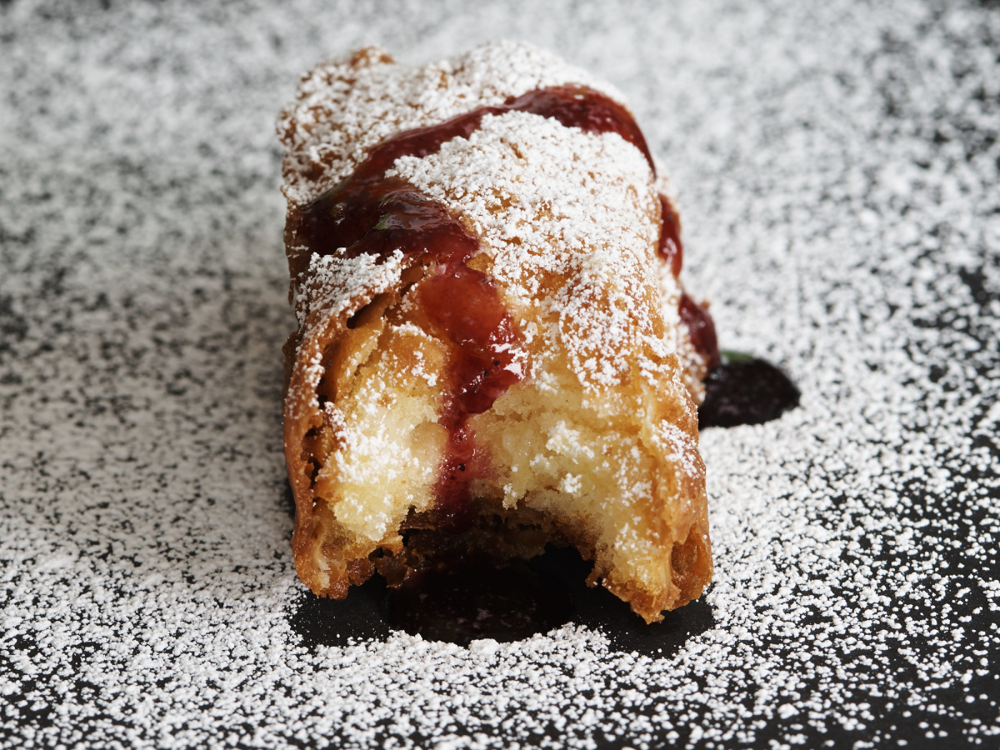
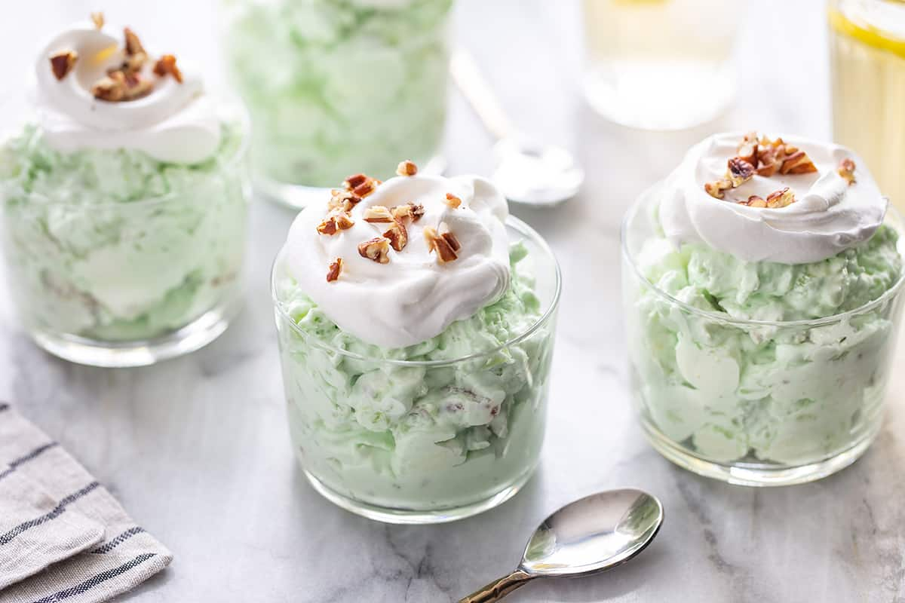
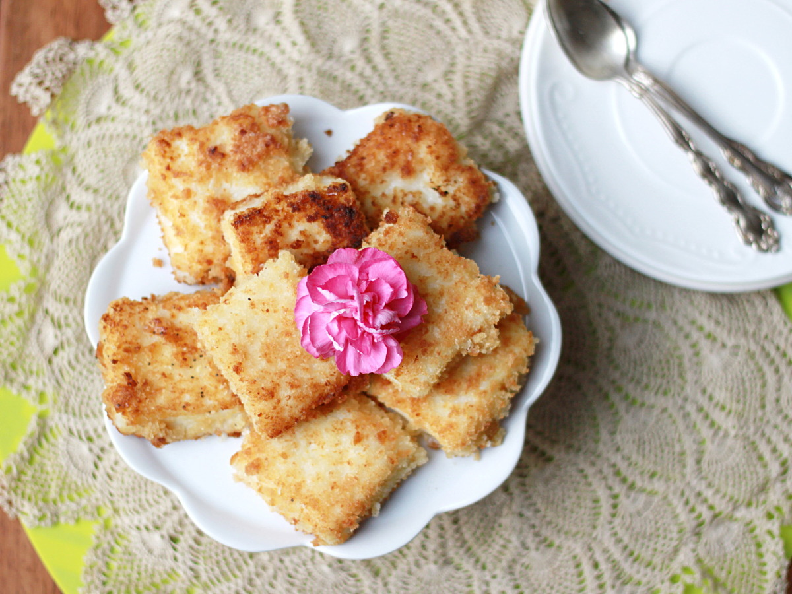

The Kooky Desserts!
FRIED TWINKIES

Ingredients
- 6 Hostess Twinkies
- 6 wooden popsicle sticks
- vegetable oil
- flour
Batter
- 1 cup of milk
- 2 tablespoons of vinegar
- 1 tablespoon of oil
- 1 cup of flour
- 1 teaspoon of baking powder
- 1/2 teaspoon of salt
Directions
- Freeze the twinkies for at least 2 hours.
- can freeze overnight.
- Heat your oil in fryer to 375 degrees.
- Mix your batter as such: milk, vinegar,oil.
- In another bowl blend flour, baking powder and salt.
- whisk wet ingredients into dry, mix until smooth.
- refrigerate until oil reaches temperature.
- insert sticks into twinkies, leaving enough of a end to hold.
- dust with flour and dip into batter be sure batter covers the entire twinkie place twinkie in hot oil with utensil being sure the twinkie browns evenly (the twinkie will float) about 3- 4 minutes.
- Remove to paper towel- cool 5 minutes.
- Serve with a Berry Sauce Raspberries or mixed Berry preserves heated until warm.
WATERGATE SALAD

Ingredients
- 3 (1/2 ounce) package instant pistachio pudding mix
- 20 ounce can crushed pineapple with juice, undrained
- 1 cup miniature marshmallow
- 1/2 cup chopped nuts
- 2 cups thawed whipped topping
Directions
- STIR pudding mix, pineapple with juice, marshmallows and nuts in large bowl until well blended.
- GENTLY stir in whipped topping.
- REFRIGERATE 1 hour or until ready to serve.
- Garnish as desired.
FRIED MILK

Ingredients
- 1/2 cup of sugar
- 1/2 cup of cornstarch
- 1/4 teaspoon of ground nutmeg
- 3 cups of milk
- 1 tablespoon butter or 1 tablespoon margarine
- 1/4 teaspoon of grated lemon, rind of
- 2 eggs, well beaten
- 3/4 cup Progresso plain breadcrumbs
- vegetable oil
- 1/3 cup of powdered sugar
Directions
- Mix granulated sugar, cornstarch and nutmeg in 3-quart saucepan.
- Gradually stir in milk.
- Heat to boiling over medium heat, stirring constantly.
- Boil and stir 1 minute; remove from heat.
- Stir in butter and lemon peel.
- Spread evenly in ungreased square baking dish, 8x8x2 inches.
- Refrigerate uncovered at least 3 hours until firm.
- Cut custard into 2-inch squares, using wet knife.
- Dip custard squares into eggs, then coat with bread crumbs.
- Heat oil (1 to 1/2 inches) to 360°F; fry 2 or 3 squares at a time in oil 1 to 2 minutes or until light brown; drain on paper towels.
- Sprinkle with powdered sugar.